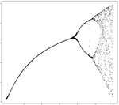
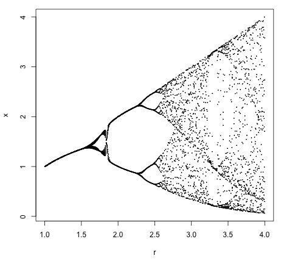
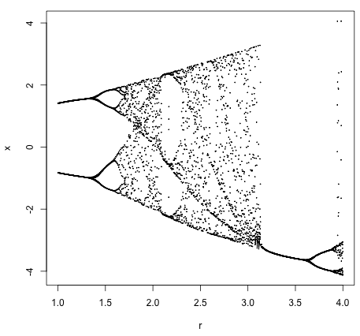
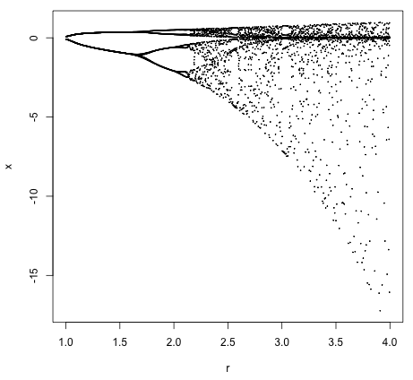

Alternatives to the Logistic Equation
 Yesterday, I decided to plot the bifurcation diagram of the logistic equation. This is a famous plot from the 70s, with which many geeks will be familiar. It shows that simple systems can switch into "chaos mode" and begin to bifurcate wildly.
{kind=link}
tl;dr: bifurcation.R
To produce the graph, we use code in the R programming language. Following that is an exploration into using alternative equations to get different graphs.
First off, we set the range and maximum iterations for the plot:
# Set the range of the r values
r_range <- seq( 1, 4, 0.01 )
# Set the maximum number of x iterations
x_max <- 30
Next we initialize the vector to hold our points:
# Initialize the bucket of x's
v <- c()
Here are the guts of the program that collects the points to plot:
# For each r, find the x values...
for ( r in r_range ) {
# Start at a low x value
x <- 0.1
# Repeat x_max times...
for ( i in 0 : x_max ) {
# The logistic equation
x <- r * x * ( 1 - x )
# Hopefully we have stabilized
if ( i > x_max / 2 ) {
v <- c( v, x )
}
}
}
The crucial bit, to keep in mind, is the line with the iterating logistic equation.
Lastly we plot the points and save the graph!
png(file = 'bifurcation.png')
plot(
seq( 1, 4, length.out = length(v) ),
v,
type = 'p',
cex = 0.1,
xlab = 'r',
ylab = 'x'
)
dev.off()
OK. Now that we have our traditional logistic equation bifurcation diagram, what can we do next? How about finding other equations which produce bifurcation diagrams? Check these out:
The equation, x <- r * x ** (1 - x) generates this plot:

The equation, x <- r * cos(x) - sin(x) generates this plot:

The equation, x <- r * exp(x) * (1 - exp(x)) generates this plot:

More alternative equations:
r - x ** 2 or r ** cos(1 - x) or r * cos(x) * (1 - sin(x)) ...